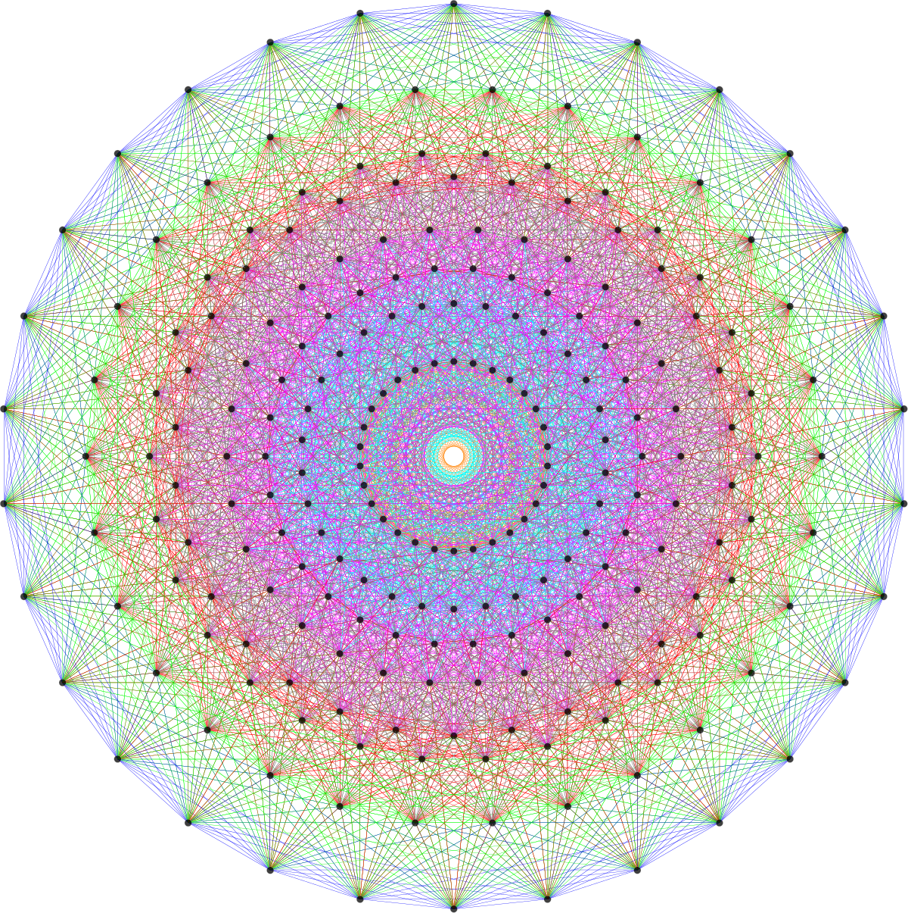

Group theory is one of the fundamental constructs of abstract algebra, often defined as expressions of symmetry. This notion of symmetry becomes increasingly clear when looking at certain groups such as $D_3$, the group consisting of all rotations and reflections of a triangle in space.
I first saw the proof of Fermat's Little Theorem using LaGrange's Theorem in my Groups and Symmetries lecture and was struck by its elegance. Often referred to as the most fundamental theorem in all of group theory, LaGrange's Theorem provides invaluable insights into understanding and proving Fermat's Little Theorem.
Before we dive into the proof, you can click below for a quick recap on group theory. This is by no means an exhaustive review and will not suffice if one has no prior knowledge of group theory.
LaGrange's Theorem
Let $G$ be a finite group and let $H \preceq G$, then $|H| \mid |G|.$
proof.Let $$a_1H, a_2H, ..., a_kH$$ represent the distinct left cosets of some $H \preceq G$ with $a_i \in G$. Notice, $$\bigcup\limits_{i=1}^k a_iH_i = G.$$ Recall that $a_i H \cap a_j H = \varnothing$, for $i \neq j$. We know the cosets partition $G$, so we have $$\sum_{i=1}^k |a_iH| = \sum_{i=1}^k |H| = |G|,$$ since $$|a_i H| = |H| \text{, } \forall i.$$ Thus, we can conclude that $$\sum_{i=1}^k |H| = k|H| = |G|$$ $$\Longrightarrow |H| \mid |G|,$$ completing the proof. The proof is similar if we were to have used right cosets instead of left cosets.
The proof of LaGrange's Theorem relies heavily on the concept of cosets and the fact they partition the group. If we know that there exists a finite number of cosets, say $k$ of them, we know that $G$ is composed of $k$ cosets of all the same order (size). Intuitively we can see that the order of the coset must divide the order of the group and since each coset has the same order as the subgroup used to derive them, the order of the subgroup is $k$ times smaller than the order of the group, proving the division.
I want to point out that the converse of LaGrange's Theorem is not true, that is, if $n \mid |G|$ there does not necessarily need to be a subgroup of such order $n$. A common example of this is with the group $A_4$ that consists of $12$ even permutations of $\{1,2,3,4\}$. Notice, even though $6 \mid 12$, there does not exist of a subgroup of $A_4$ with order $6$.
Now let's explore some of the immediate consequences of LaGrange's theorem that will be fundamental in the proof of Fermat's Little Theorem. First, notice that since $|a| = |\langle a \rangle|$ and $\langle a \rangle \preceq G$ we know that $|a| \mid |G|$ for every $a \in G$. Moreover, taking an element to the power of the order of the group will yield the identity element, that is, $a^{|G|} = e$, for every $a \in G.$ Before proving Fermat's Little Theorem, let's define a crucial group used in the proof.
Let $U(n) = \{ [x] \in \mathbb{Z}_{n} : \text{gcd}(x, n) = 1\}$ be the set consisting of the equivalence classes such that $x$ is relatively prime to $n \geq 2$ (sometimes denoted $(\mathbb{Z}/n\mathbb{Z})^{\times}$). Under the binary operation $[a][b] = [ab]$, $U(n)$ forms a group. Notice, regardless of $n$, the identity element is always $1$. Abusing notation, we often write $[a]$ as $a$ but be sure to remember that we are manipulating equivalence classes mod $n$, not integers. Recalling the Euler's Totient Function, we can see that $\phi(n) = |U(n)|$.
For example, let's consider $U(8) = \{1,3,5,7\}$. Here we have $e = 1$, $|3| = |5| = |7| = 2$ and $\phi(8) = |U(8)| = 4$. Notice, $|a| \mid |U(8)|$, as shown by LaGrange's Theorem.
We are now ready to prove Fermat's Little Theorem. The elegance of the proof is just one of the many examples of the applications of LaGrange's Theorem. I strongly recommend further exploring the applications and use of LaGrange's Theorem.
Fermat's Little Theorem
If $p$ is a prime number then $a^{p} \equiv a$ (mod $p$), $\forall a \in \mathbb{Z}$.
proof.Since $p$ is prime, $$U(p) = \{1,2,...,p-1\}$$ and $$\phi(p) = p - 1 = |U(p)|.$$ Consider any $a \in U(p)$, we know that $$\langle a \rangle \preceq U(n) \Longrightarrow |\langle a \rangle| \mid p-1$$ by LaGrange's Theorem. Since $|a| = | \langle a \rangle|$, $$|a| \mid p - 1 \Longrightarrow |a|n = p - 1,$$ for some $n \in \mathbb{Z}.$ Recalling the definition of order, $$a^{p-1} = a^{|a|n} = a^{|a|^n} = 1^n = 1,$$ since the identity element in $U(p)$ is $1$. This gives us, $$a^{p-1} \equiv 1 (\text{mod } p),$$ and after multiplying by $a$, we achieve $$a^p \equiv a (\text{mod } p),$$ completing the proof.
Notice, our proof holds under the assumption that $a \neq 0$, but if $a = 0$, certainly $$ 0^p \equiv 0 (\text{mod } p).$$